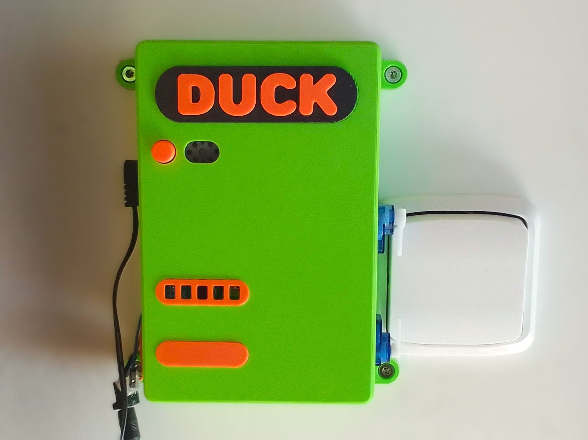
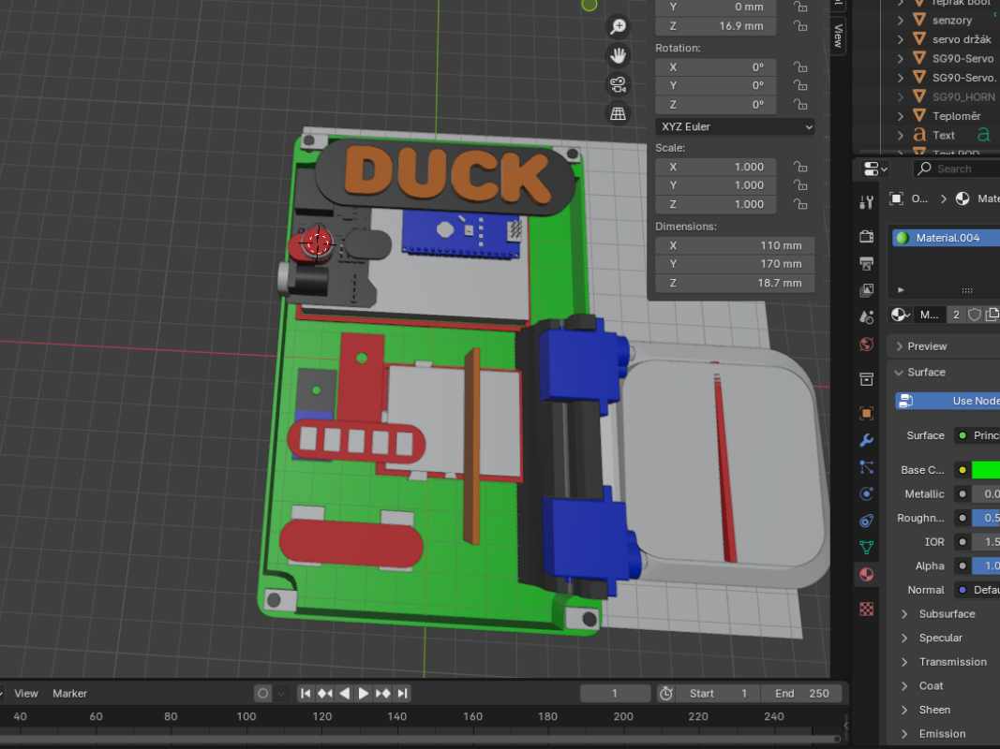
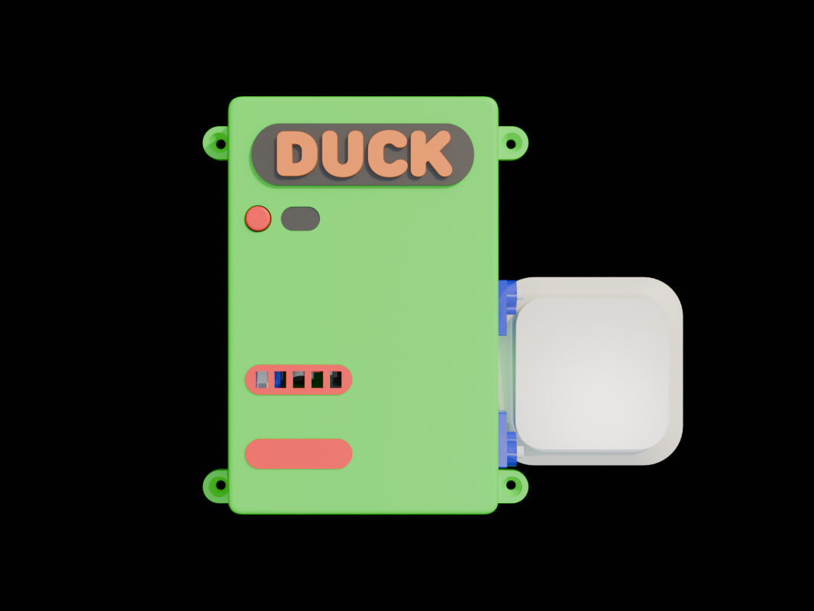
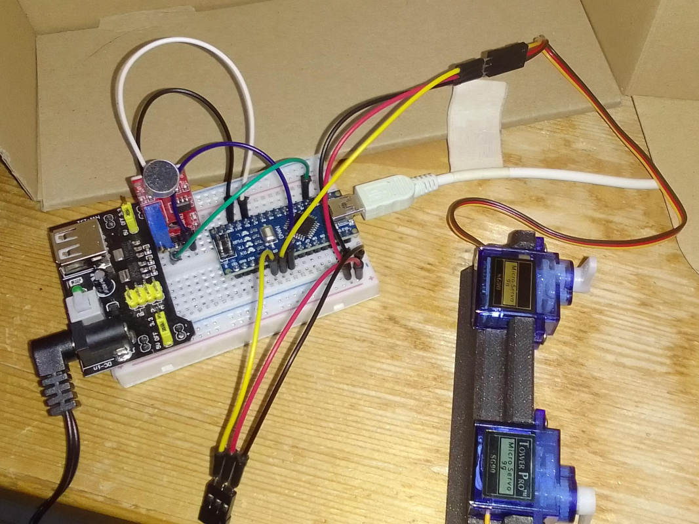
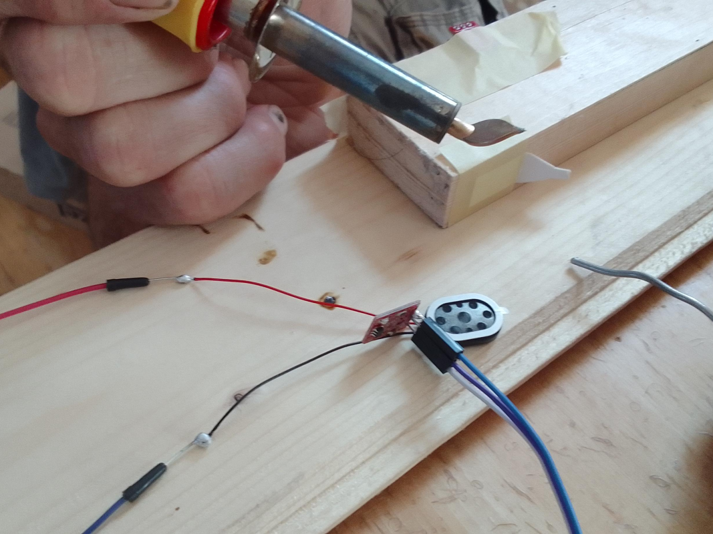
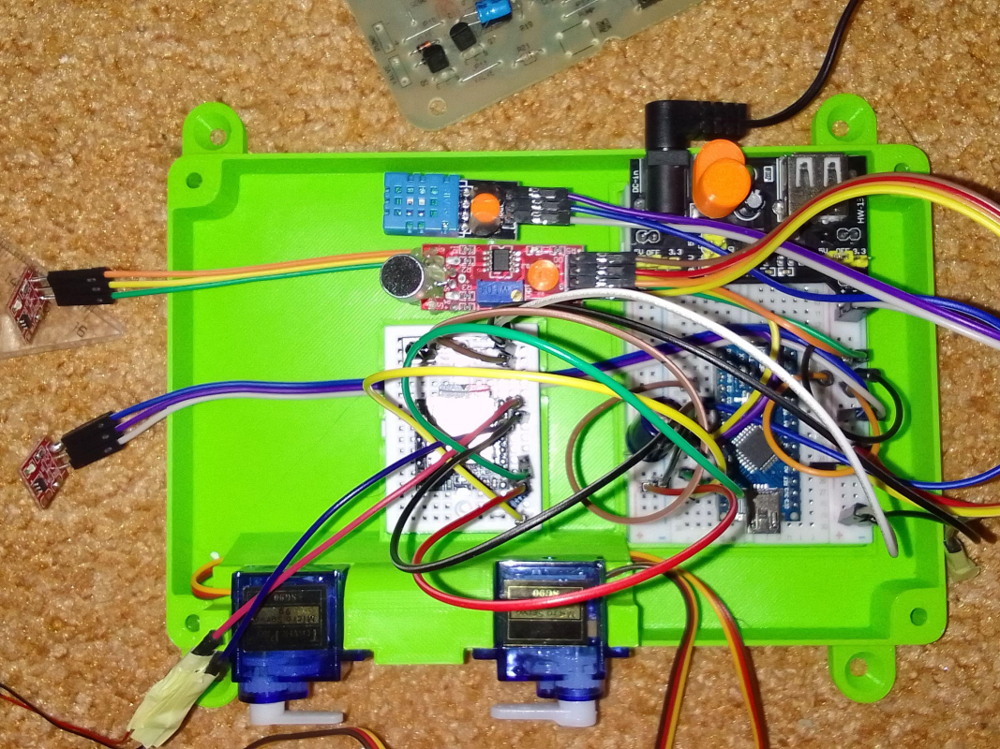
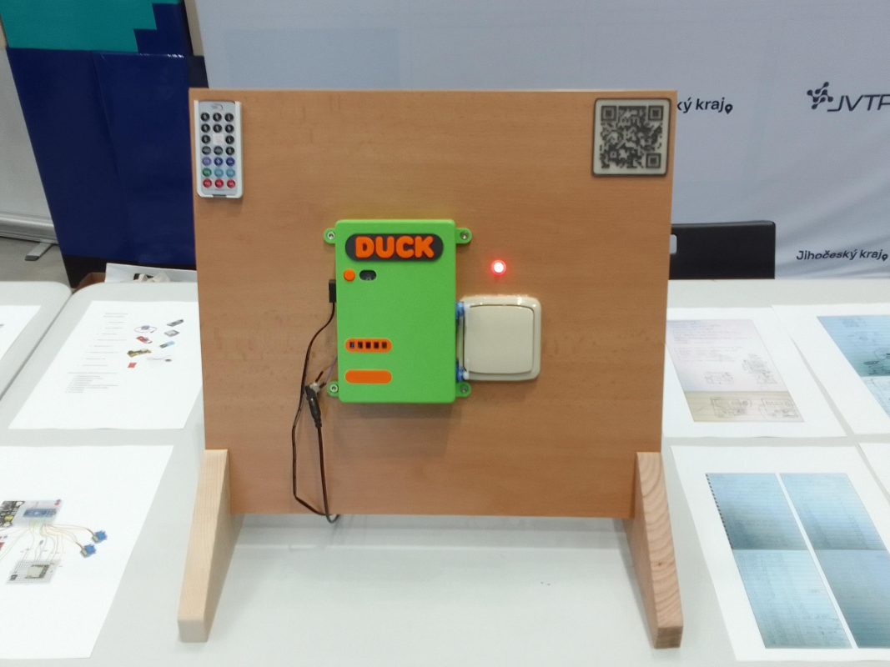

DUCK
-Do not print, wait for V2-| Estimated hardware price | 25 USD |
| Measurements (XYZ, cm) | 14 x 17 x 3.4 |
This is the main part of the ecosystem. Wall-mounted home assistant able to switch on and off lights, tell you current temperature and humidity in the room. You can control it in many ways, by clapping, using remote control or touching it. It responds with sound. It's easy to build, requires just a bare minimum of soldering and no digging in the light cables. However, it has one large powering issue, so I recommend you to not print it. I'll be hopefully making version 2 soon and I'll try to fix the issues and add more functionality, so it may be worth to wait.
Expected V2 improvements: LCD display, current time, atmospheric pressure, internet connection.
Behind the scenes
Duck was my first Arduino project (not counting a failed tank), so it's sadly flawed. But I learnt a lot while making it and that's what counts :). The project was inspired by a video by Placitech about his home assistant, which has been since taken down. Despite some controversal jokes, the video left me amazed and I decided to build my own but actually useful assistant. I had to sadly reject a lot of functions I originally wanted, to keep the price down. While designing it I tried to make it as easy to build as possible. I decided to rather use servos instead of relays and placed the parts on breadboards, thus reducing the required soldering to absolute minimum. I made the model in Blender and than printed it on my Prusa MINI+. While testing the parts for the last time, I managed to burn my mic, so I had to replace it. And than I found out that my power supply isn't strong enough and I had to add one more power line from USB charger. It works quite reliably now, but I a not completely happy with the powering solution, so if you have any ideas on how to fix that, please, let me know.





